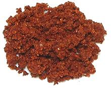

 |
Ricado RojoMexico, Yucatán - Ricado Rojo | ||||
| Makes: Effort: Sched: DoAhead: |
1/2 cup ** 20 min Yes |
This is the most important of the Yucatán seasoning pastes, used in recipes like how Thai curry pastes are used. I make it quite dry so it will not spoil easily. | |||
|
----- 4 1 10 1 4 2 1/2 1/2 ----- 3 3 |
--- T T in t t --- cl T |
-- Spices Annatto seeds (1) Oregano, dried (2) Peppercorns, black Cinnamon stick (3) Cloves Allspice berries Cumin seeds Salt ---------- Garlic Vinegar |
Make - (20 min)
|